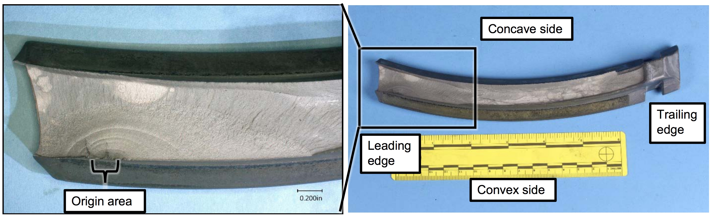
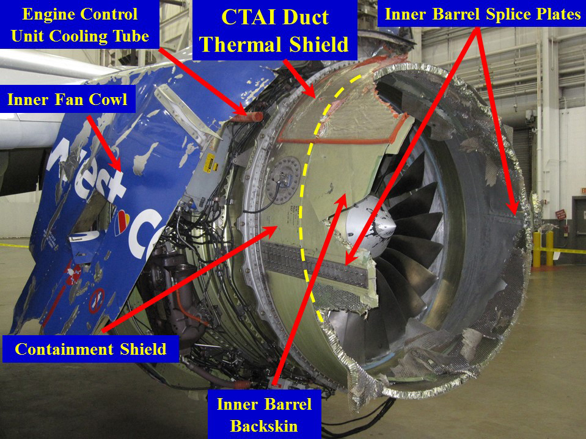
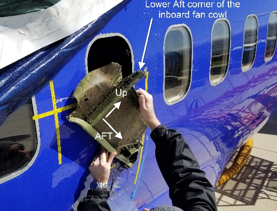
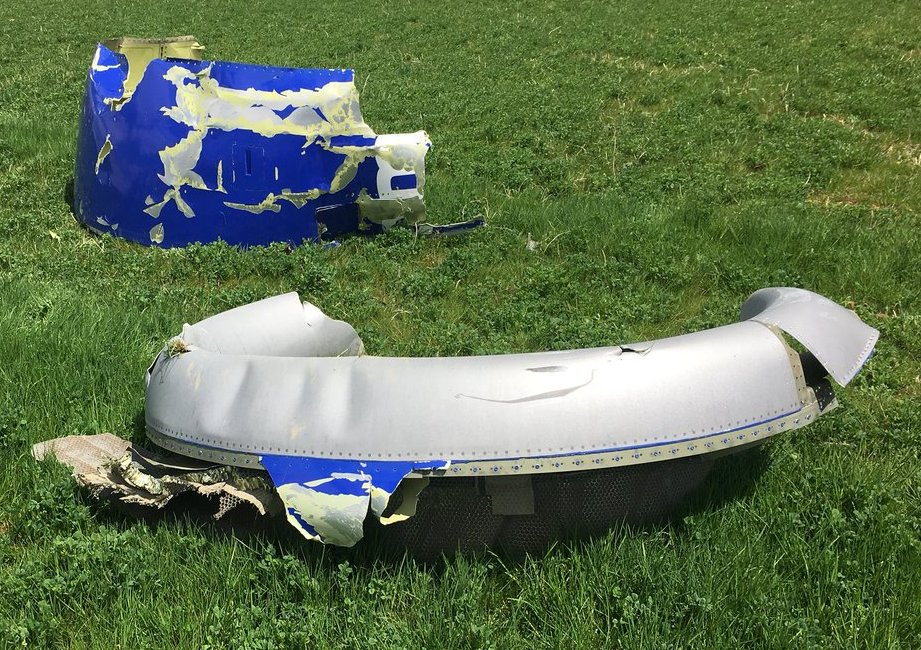

Why full, reliable coverage is the precondition every inspection method needs — real cases, not hypotheticals.
Scope note: the AeroLoop system does not detect or classify defects — it verifies that a flight
controller can physically reach and cover every required inspection point without crashing, under
realistic wind disturbance. This report exists to establish why that specific capability matters:
every defect category below depends on complete, consistent coverage to be caught at all, regardless of
what sensor or method is doing the looking.
The baseline problem
99.1%
autonomous drone surface coverage
78%
average manual walk-around coverage
~15%
typical manual inspection miss rate
+27%
higher detection rate with automation
Case 1 — Fan blade root fatigue crack
FATAL INCIDENT
Southwest Airlines Flight 1380 (April 17, 2018)
A CFM56-7B fan blade fractured in flight from a low-cycle fatigue crack that had been present since
a 2012 overhaul. The crack was missed by the then-standard fluorescent penetrant inspection (FPI) — a
surface-only method — because the crack origin was subsurface, at the blade root. It was only
reliably catchable by eddy-current inspection, which requires close, stable, repeatable probe
positioning across every blade root, not a one-off glance. The failed blade struck the fan cowling,
which detached and struck the fuselage, causing a fatal rapid decompression.

The actual fracture surface, with fatigue crack growth visible as concentric marks near the origin. NTSB investigation photo, May 3 2018.

Damage to the inboard side of the cowling, with components identified by NTSB investigators.

The consequence: a cabin window opening with a fragment of the inboard fan cowl. This is what a missed subsurface defect ultimately cost.

Recovered cowling debris, found in a field near Bernville, Pennsylvania.
Source: NTSB Accident Report AAR-19/03; images are official NTSB investigation photographs
(U.S. federal government work product, public domain), via Wikipedia / Wikimedia Commons.
Case 2 — Fan cowl latch, underside
45+ INCIDENTS
Airbus A320-family fan cowl door loss incidents
Over three decades, 45+ documented incidents involved A320-family engine fan cowl doors separating
in flight because their latches were left unlatched or failed. The latches sit low, on the underside of
the nacelle — a zone that, per the Aviation Safety Network timeline, "can only be inspected by crawling
under it." Routine walk-arounds and fixed-angle cameras structurally struggle to reach this exact spot,
which is precisely why it is the recurring failure point, not a one-off fluke.
Reference photo of an A320-family aircraft (A319) showing the fan cowl area referenced in these incidents. Illustrative of the component and its low, occluded position — not a photo of an actual incident.
Facesheet-to-core disbond, honeycomb core crush, ply delamination, and trapped water in acoustic
panels are common nacelle failure modes — and completely invisible to plain visual inspection. Catching
them requires pulsed/flash thermography (ASTM E2582): a heat pulse is applied, and the surface cooling
pattern is read frame-by-frame. This needs a stable, perpendicular sensor position for several seconds
per panel — any panel not covered at the right distance and angle is simply unread, not "inspected
and clean."
Concept illustration based on ASTM E2582 flash thermography methodology and nacelle MRO literature. Not a reproduction of any specific published figure.
NDT methods and drone-mountability
Method
Detects
Positioning requirement
Drone feasibility
Borescope
Internal blade/combustor damage
Physical probe insertion
Not externally droneable
Fluorescent penetrant
Surface cracks
Contact/chemical process
Not droneable
Eddy current
Sub/near-surface cracks
Close, stable probe proximity
Possible at short range with stable standoff
Flash thermography
Composite disbond, water ingress
Fixed standoff, perpendicular, seconds of dwell per panel
Directly needs a wind-robust controller
Optical / RGB (Donecle, Mainblades)
Surface-visible damage
Full systematic coverage
Already deployed, fixed pre-programmed paths
The honest bridge. We didn't build a defect detector. We built and verified the one thing every
method in that table depends on: a flight controller that holds full coverage under real wind
disturbance, where a naive controller collapses to 29.9% coverage under the exact same conditions. A gust
that knocks a fixed-path drone off course doesn't produce a false negative on the panel it missed — it
produces no reading at all. That gap is where fan blade root cracks, underside latches, and
disbonded panels currently go unfound, today, on real aircraft.